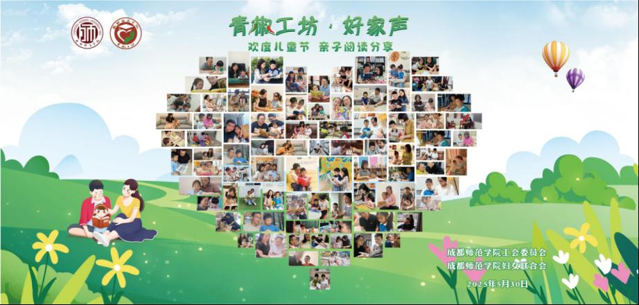

为深入学习贯彻习近平总书记关于“注重家庭、注重家教、注重家风”的重要指示精神，营造浓厚的家庭阅读氛围，树立家庭文明新风尚，在2025年“六一”儿童节前夕，校工会委员会、校妇女联合会组织开展了“青椒工坊・好家声——书香润童年”亲子阅读分享活动。活动吸引了全校170余个教职工家庭参与，分享亲子阅读温馨时刻。
本次活动以书为媒，以阅读为纽带，旨在增进亲子互动，共建书香家庭，让教职工家庭在亲子共读互动中收获知识和快乐，为孩子留下珍贵的童年记忆。校工会、校妇联将持续发挥桥梁纽带作用，组织开展更多形式多样、寓教于乐的活动，为深化家庭文明建设、促进校园和谐发展创造良好环境。

现场照片
本次活动以书为媒，以阅读为纽带，旨在增进亲子互动，共建书香家庭，让教职工家庭在亲子共读互动中收获知识和快乐，为孩子留下珍贵的童年记忆。校工会、校妇联将持续发挥桥梁纽带作用，组织开展更多形式多样、寓教于乐的活动，为深化家庭文明建设、促进校园和谐发展创造良好环境。
本次活动以书为媒，以阅读为纽带，旨在增进亲子互动，共建书香家庭，让教职工家庭在亲子共读互动中收获知识和快乐，为孩子留下珍贵的童年记忆。校工会、校妇联将持续发挥桥梁纽带作用，组织开展更多形式多样、寓教于乐的活动，为深化家庭文明建设、促进校园和谐发展创造良好环境。